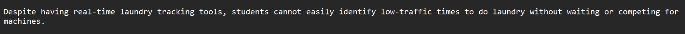
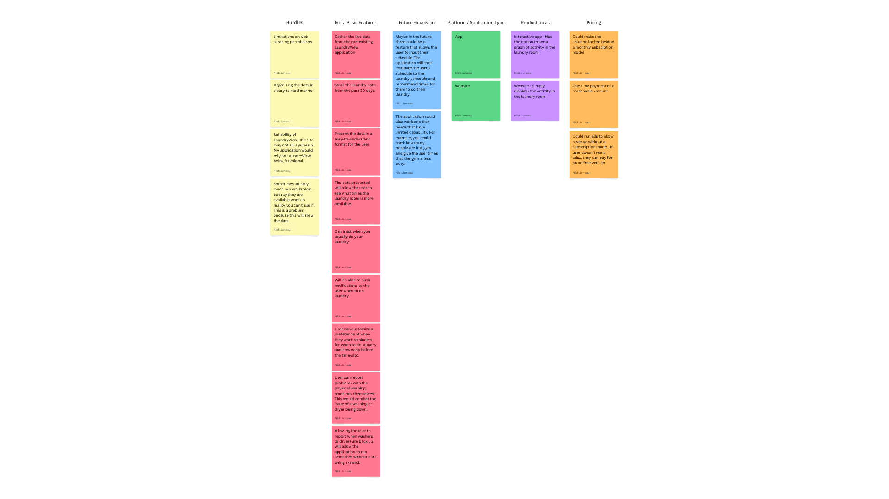

Highlighted Projects
Problem Statement
Despite having real-time laundry tracking tools, students cannot easily identify low-traffic times to do laundry without waiting or competing for machines.
Affinity Diagram
My affinity diagram groups user research insights into themes, revealing patterns in student laundry habits.
Sketches

The sketches illustrate three app concepts that make it easier for students to plan laundry by predicting low-traffic times.